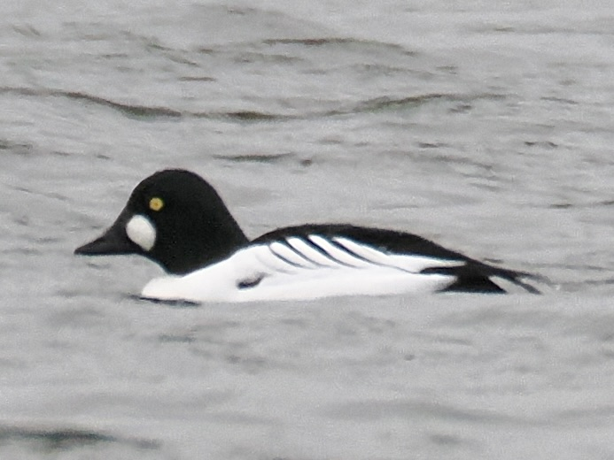
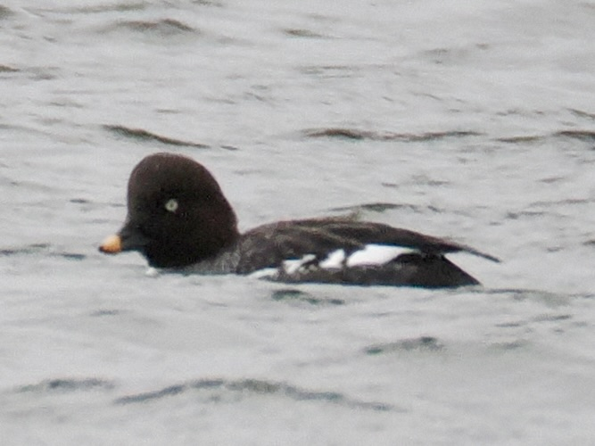
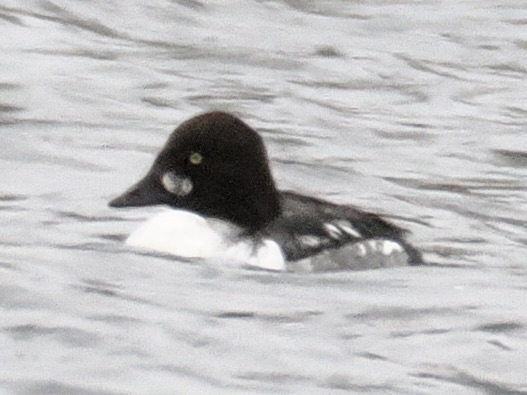

Common Goldeneye
Bucephala clangula
Order: Anseriformes
Family: Anatidae

A bizarre-looking divingduck. Has glaring yellow eyes. Breeding male has a green head with a unique shape, black back, white sides, and a white patch by the base of the bill.

Female has a brown head and a yellow-tipped black bill. Breast and body are grey.

Immature male also has a brown head, but here one can see the developing white breast and patch on the bill base.